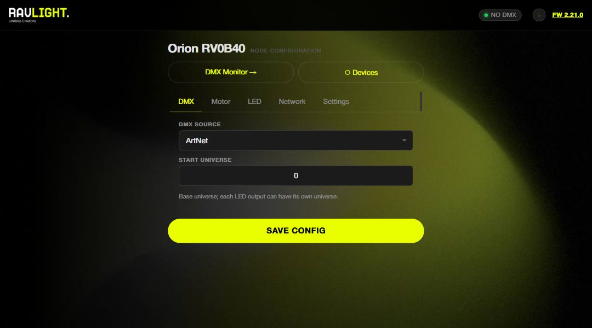
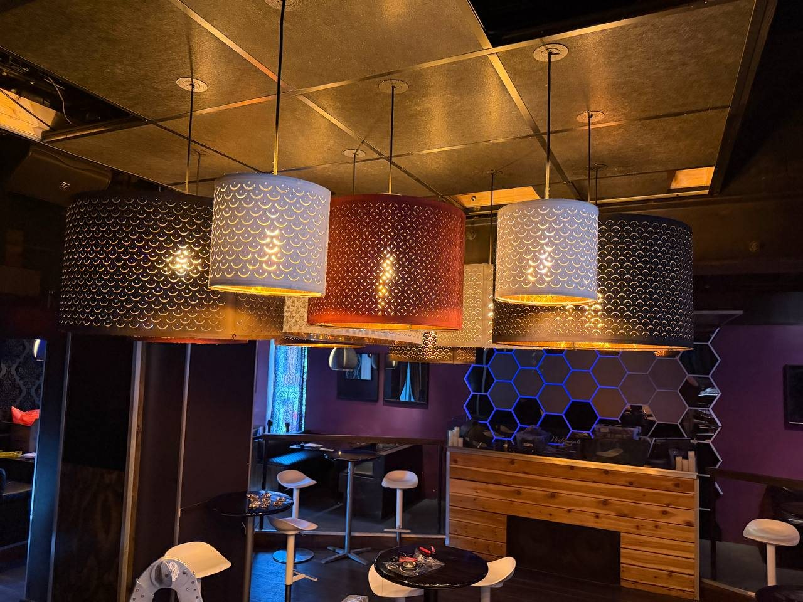
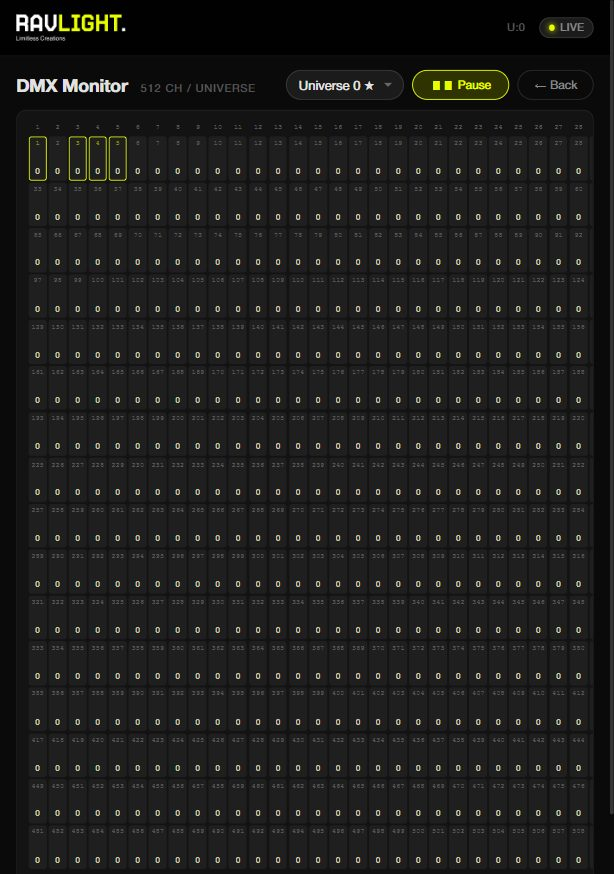

Hardware, firmware and tools
Fixtures and boards we build, the open firmware that runs them, and the tools to manage a rig.
1 · Hardware
Fixtures and boards designed by RavLight. Or a board you already own: the firmware runs on controllers from QuinLED and Gledopto too.
2 · Firmware
RavLight Core installs on the board from the browser. You choose a fixture, and the board becomes that fixture.
3 · Tools
Polaris sets up and updates a whole rig. Home Assistant watches it once the show runs.
Built by RavLight

Veyron
A 1 m pixel bar with two RGB rows and six white segments. Art-Net, sACN and DMX.

XDMX v3
One board for a whole fixture. Two Ethernet ports that keep the chain alive if a fixture loses power, two isolated DMX ports, up to 14 outputs.
View board →RavLight Core
Open firmware for ESP32 lighting controllers. Networking, DMX, effects, the web page and updates are shared. Each fixture adds only what its hardware needs.
- Art-Net and sACN, up to 32 universes, and DMX512 by cable
- Ethernet first, then WiFi, then its own access point
- Set up in the browser, updated over the network
- Recorded shows, built-in effects and signal-loss behaviour

Four fixtures in the firmware
A fixture is the part of RavLight that knows one kind of hardware: its outputs, its DMX channels and its controls in the web page. You pick it when you install.

Veyron
The firmware of our Veyron bar. 40 RGB pixels and 6 white segments.
- 9 DMX personalities, 4 to 133 channels
- 32 RGB macros and 12 white macros
- Board: XDMX rev2.2

Elyon
Turns a multi-output board into an Art-Net and sACN LED node. Each output is set up on its own.
- 2 to 15 outputs, depending on the board
- WS281x, SK6812, TM181x, APA102, SK9822, P9813, PWM, relay
- Per output: pixel count, universe, grouping, colour order
- Boards: QuinLED Dig-Octa, Penta+, Penta Deca, Gledopto Elite 2D and 4D

Orion
A DMX winch that raises and lowers loads. Running twelve chandeliers in a bar in the USA.
- Homing without a limit switch, with a setup wizard
- DMX position in 8 or 16 bit, with speed and acceleration
- Watchdog, travel limits and a safe Enable channel
- Board: LED Lifter v5 by Q-Squared Systems

Axon
Brings a network rig to a classic DMX line. Art-Net or sACN in, DMX512 out.
- Full 512-channel universe on the wire
- Status display: IP, source, universe, frame rate
- Two extra LED outputs
- Board: XDMX v1.4
Manage the rig
Neither tool sends DMX. Your console keeps that job.


See it working
Clubs and venues already running RavLight.